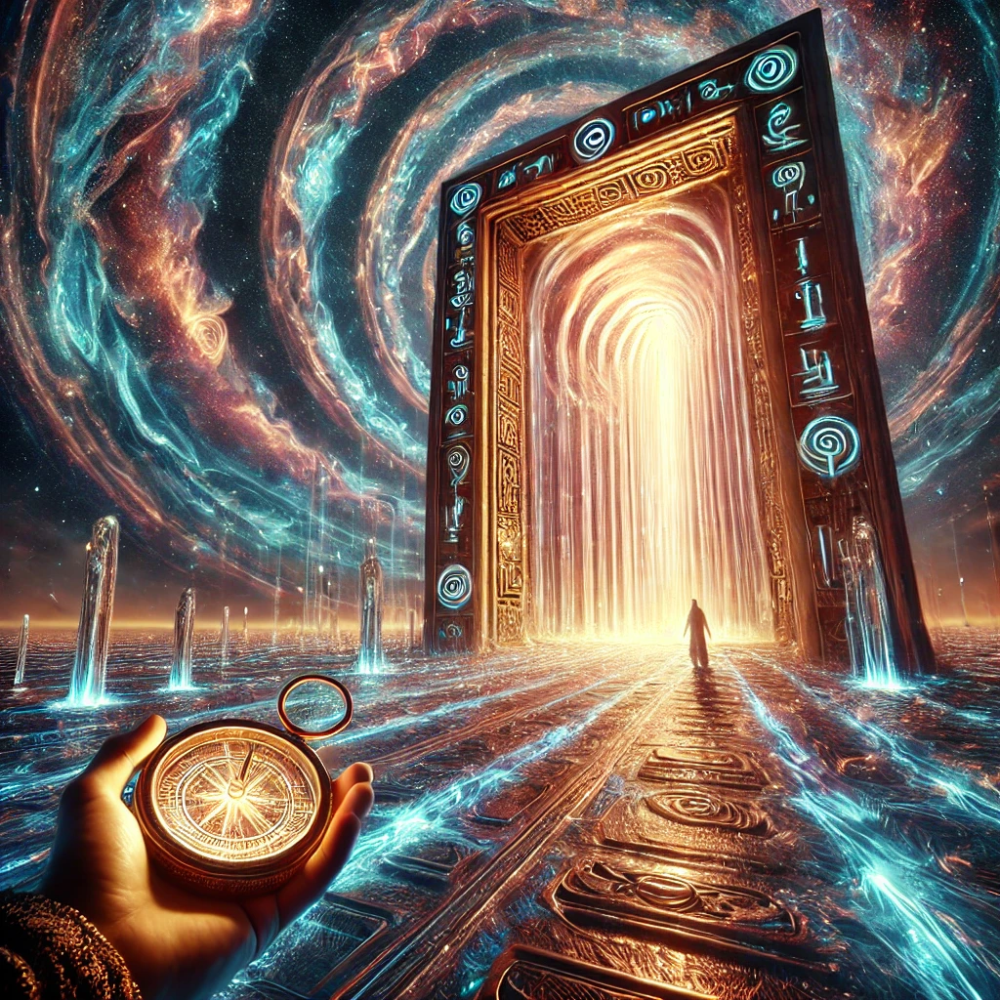

The gateway towers before you, its surface shimmering like liquid light. The glyphs carved into its frame pulse faintly, resonating with the compass in your hand. You step closer, feeling the hum of energy as you reach out to touch the gateway.
As your fingers graze the surface, the world around you dissolves. A radiant tunnel stretches before you, spiraling with colors and patterns that defy description. The gateway pulls you forward, and you feel as though you’re both falling and rising at the same time.
“The gateway is a threshold,” a voice whispers in your mind. “Beyond it lies transformation, but the path is yours to shape.”
You emerge into a new realm, filled with possibilities. The air hums with potential, and pathways stretch out in every direction. The gateway behind you seals itself, leaving you to choose where to go next.

Where will you go?